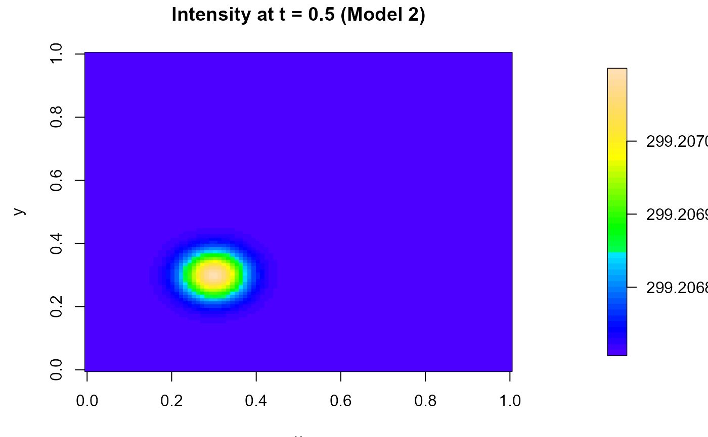

R/get_lambda_function.R
get.lambda.function.RdReturns an intensity function \(\lambda(x,y,t)\) corresponding to one of four models used for simulation experiments in Ghorbani et al. (2021). Each model is a mixture of a separable "background" component and a structured (generally non-separable) spatio-temporal Gaussian bump. The models provide different degrees of space–time separability, allowing for controlled experiments on separability testing.
Numeric scalar (> 0). Baseline intensity level (interpreted as an expected total count after scaling in the calling simulator; see details below).
Numeric scalar (>= 0). Weight of the structured (non-separable) component.
Integer in 1:4 indicating the structure of the intensity function.
Numeric scalar. Mean of the temporal Gaussian background term (models 2 and 4).
Numeric scalar (> 0). Standard deviation of the temporal Gaussian background term (models 2 and 4).
Numeric vector of length 2. Mean of the spatial 2D Gaussian background term (models 3 and 4).
Numeric vector of length 2 with positive entries. Standard deviations of the spatial 2D Gaussian background term (models 3 and 4).
Numeric vector of length 3. Mean of the structured (non-separable) 3D Gaussian component.
Numeric vector of length 3 with positive entries. Standard deviations of the structured 3D Gaussian component.
A function of the form function(x, y, t) representing the selected intensity surface.
The returned function is intended for use in simulation (e.g., for generating spatio-temporal Poisson point patterns under varying degrees of separability).
The intensity is constructed as:
$$\lambda(x,y,t) = \lambda_{\mathrm{bg}}(x,y,t) + g\, f_{st}(x,y,t),$$
where \(f_{st}\) is a nonnegative 3D Gaussian density (via norm3d) and the background term
\(\lambda_{\mathrm{bg}}\) depends on model:
Homogeneous background: \(\lambda_{\mathrm{bg}}(x,y,t) = (N-g)\)
Temporal inhomogeneity only: \(\lambda_{\mathrm{bg}}(x,y,t) = (N-g)\, f_t(t)\), where
\(f_t\) is a 1D Gaussian density (dnorm).
Spatial inhomogeneity only: \(\lambda_{\mathrm{bg}}(x,y,t) = (N-g)\, f_s(x,y)\), where
\(f_s\) is a 2D Gaussian density (norm2d).
Separable spatial-temporal inhomogeneity: \(\lambda_{\mathrm{bg}}(x,y,t) = (N-g)\, f_s(x,y)\, f_t(t)\).
Note: since Gaussian densities can exceed 1 for small standard deviations, N is best interpreted
as a scaling parameter used by the calling simulator. Ensure \(\lambda(x,y,t)\) is nonnegative over the
intended domain.
See more details in Ghorbani et al. (2021), Section 6.1.
This function is primarily intended for generating intensity functions used in
simulation studies. In particular, rstpoispp calls
get.lambda.function() internally to construct intensity models for
simulating spatio-temporal Poisson point processes with controlled separability.
Ghorbani, M., Vafaei, N., Dvořák, J., and Myllymäki, M. (2021). Testing the first-order separability hypothesis for spatio-temporal point patterns. Computational Statistics & Data Analysis, 161, 107245.
# \donttest{
# Choose model 4: non-separable spatio-temporal intensity
lambda <- get.lambda.function(N = 210, g = 50, model = 4)
lambda(0.5, 0.5, 0.5) # Evaluate intensity at center of space-time domain
#> [1] 1269.873
# Visualize spatial intensity at fixed time for model 2
lambda2 <- get.lambda.function(N = 200, g = 50, model = 2)
x <- y <- seq(0, 1, length.out = 100)
z <- outer(x, y, function(x, y) lambda2(x, y, t = 0.5))
par(mar = c(5, 4, 4, 6))
fields::image.plot(x, y, z, main = "Intensity at t = 0.5 (Model 2)", col = topo.colors(50))

# }